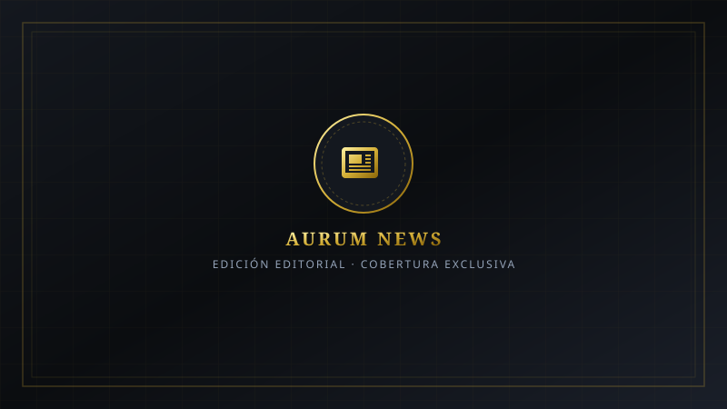

Cargando titular completo del reportaje...

Puntos Clave / Key Takeaways
- Cargando análisis y puntos centrales de la noticia...
Cargando cuerpo completo de la noticia...

Ingeniero en Sistemas y Computación con Postgrado en Ingeniería de Software y Maestría en Sistemas Mención Gerencial (Universidad Dominicana O&M). Con más de 15 años de trayectoria, transformo problemas de alta complejidad en soluciones escalables. Durante el último año, he centrado mi trabajo en I+D+i (Investigación, Desarrollo e Innovación), explorando arquitecturas de IA Generativa (RAG / LLMs), integración de agentes autónomos con bases de datos y orquestación de APIs empresariales.
🔬 Mi motor es el aprendizaje a través de los retos: me apasionan los casos de uso reales, las pruebas técnicas rigurosas, la investigación profunda y el diseño de soluciones directas a problemas de ingeniería. 🎓 Como docente universitario y creador del canal educativo @JuancitoDevV, comparto este conocimiento práctico mediante ejercicios y proyectos de código abierto para acercar la tecnología a problemas reales. 🚀